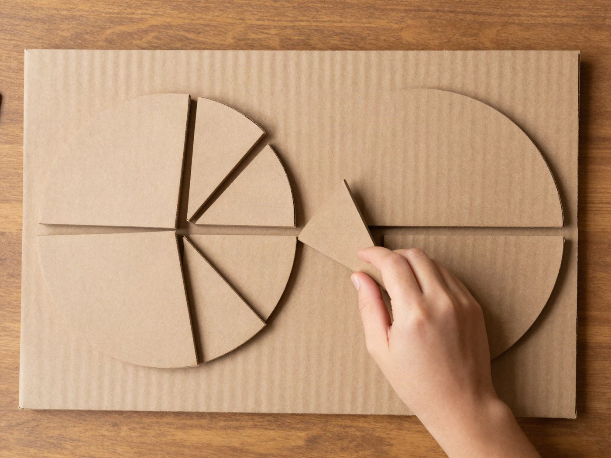

전체 단원 › 실험·활동 › 3~4학년 수학
피자 상자 분수판

피자 상자를 잘라 만든 분수판으로 1/2과 1/4 중 어느 쪽이 더 큰지 손으로 확인해요.
40분 · 난이도 ★☆☆ 쉬움
준비물
- 두꺼운 종이 상자 — 피자 상자나 택배 상자를 펼쳐서
- 분수 원판 도안 — 아래에서 내려받아 컬러로 인쇄해요
- 풀, 가위, 커터칼 — 상자 자르기는 어른이 해요
- 네임펜 — 조각 뒷면에 분수를 적어요
하는 방법
- 도안 붙이기
도안을 인쇄해 원 6개를 오리고, 펼친 상자 판에 풀로 붙여요. - 조각 자르기
원 테두리와 안쪽 선을 따라 조각을 잘라요. 조각 뒷면에 1/2, 1/3처럼 분수를 적어 둬요. - 전체 위에 덮어 보기
노란 '1' 원 위에 1/2 조각 두 개를 올려 보세요. 딱 맞게 덮이나요? 1/4 조각 몇 개로 덮을 수 있는지도 세어 봐요. - 크기 비교 게임
조각 두 개를 골라 겹쳐 보고 더 큰 쪽을 맞혀요. "1/3 피자와 1/4 피자 중 어느 쪽을 먹을래?" - 같은 크기 찾기
1/2 조각 하나를 다른 조각들로 똑같이 덮어 보세요. 1/4로는 몇 개, 1/8로는 몇 개가 필요한가요?
생각해 봐요
- 아래 숫자가 커질수록 한 조각의 크기는 어떻게 되나요?
- 1/4 조각 3개를 모으면 원의 얼마만큼이 될까요?
- 크기가 다르게 자른 조각도 1/4이라고 부를 수 있을까요?
개념 정리
피자를 똑같이 나눌수록 한 조각은 작아져요. 2명이 나누면 1/2, 4명이 나누면 1/4이에요. 아래 숫자는 몇 조각으로 똑같이 나눴는지, 위 숫자는 그중 몇 조각을 가졌는지를 알려 줘요.